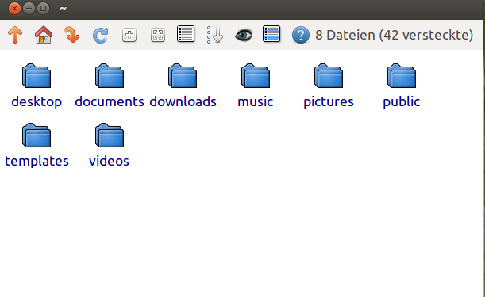
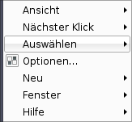
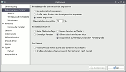

Rox-Filer
Dieser Artikel wurde für die folgenden Ubuntu-Versionen getestet:
Ubuntu 16.04 Xenial Xerus
Zum Verständnis dieses Artikels sind folgende Seiten hilfreich:
Rox-Filer  ist der Dateimanager der Desktop-Umgebung ROX , der einfach zu bedienen ist und der sehr gut eigenen Wünschen angepasst kann. Um den Rox-Filer herum kann man sich eine eigene Desktop-Umgebung bauen.
ist der Dateimanager der Desktop-Umgebung ROX , der einfach zu bedienen ist und der sehr gut eigenen Wünschen angepasst kann. Um den Rox-Filer herum kann man sich eine eigene Desktop-Umgebung bauen.
Rox-Filer war der ehemalige Standard-Dateimanager der Desktop-Umgebung Xfce, bis er von Thunar abgelöst wurde.
Installation¶
Die Installation ist wie immer recht einfach. Rox-Filer ist in den offiziellen Paketquellen enthalten und kann über das folgende Paket installiert [1] werden:
rox-filer (universe)
 mit apturl
mit apturl
Paketliste zum Kopieren:
sudo apt-get install rox-filer
sudo aptitude install rox-filer

Benutzung¶
 Ruft man den Rox-Filer einfach mit dem Befehl [3] rox auf, erscheint ein einfaches Datei-Manager-Fenster. Öffnet sich kein Fenster, hilft es oft Rox mit rox -n zu starten. Ein Klick mit der linken Maustaste auf eine Datei führt diese aus; ist sie nicht ausführbar, wird sie von ROX an eine passende Anwendung übergeben, die gestartet wird.
Handelt es sich um ein Verzeichnis, wechselt man mit dem Linksklick hinein. Verwendet man statt der linken die mittlere Maustaste, beendet sich ROX-Filer nach dem Start der angeforderten Aktion; es sei denn, es handelt sich um ein Verzeichnis - das wird dann in einem neuen ROX-Filer Fenster angezeigt. Das Kontextmenü wird mit der rechten Maustaste erreicht. Dort sind diverse Dateioperationen (Kopieren, Umbenennen, Löschen usw.) verfügbar. Drag and Drop  kann Rox-Filer natürlich auch. Zieht man eine Datei von einem Fenster in ein anderes (oder auch Verzeichnis) wird nachgefragt, was mit der Datei passieren soll (Verschieben, Kopieren, Verknüpfen).
kann Rox-Filer natürlich auch. Zieht man eine Datei von einem Fenster in ein anderes (oder auch Verzeichnis) wird nachgefragt, was mit der Datei passieren soll (Verschieben, Kopieren, Verknüpfen).
| Titel | |
| Schaltfläche(n) | Beschreibung |
 | Navigation innerhalb des Dateimanagers. |
| Lesezeichen anlegen und verwalten. | |
 | Verzeichnisinhalt neu einlesen. |
| Ansichtsgröße ändern. | |
| Dateieigenschaften ein- / ausblenden. | |
| linke Maustaste: versteckte Dateien und Ordner ein- bzw. ausblenden. - rechte Maustaste: Bildvorschau (de)aktivieren. | |
| Alles auswählen / Auswahl umkehren. | |
| Hilfe aufrufen. | |

Konfiguration¶
Der Menüpunkt "Optionen" beinhaltet alle Konfigurationsmöglichkeiten des Rox-Filers. Man kann unter anderem die Sprache, die Werkzeugleiste und Farben für die einzelnen Dateitypen einstellen.
Rox-Filer als Desktop oder Panel¶
Der Rox-Filer kann als "Pinwand" Icons auf dem Desktop platzieren, dies funktioniert allerdings nicht in Verbindung mit Unity. Dazu ruft man ihn in einem Terminal [2] z.B. mit diesem Befehl auf:
rox -p=Desktop
Man kann den Rox-Filer auch als Panel verwenden. Bei der gleichzeitigen Verwendung von Unity überlappen sich Panels und Unity Startmenü teilweise unschön. Die Position des Panels bestimmt dann der Parameter:
| Panel | ||
| Option: | Funktion: | |
-b | --bottom=PANEL | öffnet ein Panel am unteren Rand |
-t | --top=PANEL | öffnet ein Panel am oberen Rand |
-l | --left=PANEL | öffnet ein Panel am linken Rand |
-r | --right=PANEL | öffnet ein Panel am rechten Rand |
-p | --pinboard=Desktop | Rox zeigt Icons auf dem Desktop |
Wenn man aus einem Rox-Filer-Fenster Icons auf die "Pinwand" oder ein "Panel" zieht, werden diese dorthin nur verknüpft.
Will man ein Panel oder Desktop wieder verbannen reicht ein
rox -p[lrtb]=
Hintergrundbild ändern¶
Wenn man Rox-Filer dazu benutzt den Hintergrund zu zeichnen, muss man um das Hintergrundbild zu ändern einen Rechtsklick auf den Desktop machen, auf "Backdrop..." klicken und dann im neu erscheinenden Fenster das gewünschte Hintergrundbild mit der Maus auf die Fläche "Drop an image here" ziehen. Danach kann man per Klick auf "Stretch" das Bild noch an die Bildschirmausmaße anpassen.
Hintergrundfarbe ändern¶
Möchte man an Stelle eines Hintergrundbildes lediglich eine einfache Hintergrundfarbe verwenden, so gibt es zwei Methoden:
1. Methode¶
Bestehendes Hintergrundbild entfernen (Rechtsklick z.B. auf "Home"-Icon -> Backdrop -> Leeren")
Gewünschte Farbe im Optionsmenü von Rox-Filer einstellen (Rechtsklick z.B. auf "Home-Icon -> Options -> Pinboard -> Appearance, Background...")
2. Methode¶
Man erstellt, z.B. mit GIMP, ein 1x1 Pixel großes Bild in der gewünschten Hintergrundfarbe und speichert dies im PNG-Format.
Anschließend fügt man das erstellte Bild (wie zuvor beschrieben) mittels Drag&Drop im "Backdrop"-Fenster unter "Drop an image here" als Hintergrundbild ein und aktiviert den Radio-Button "stretch" (damit der gesamte Desktophintergrund mit der gewählten Farbe ausgefüllt wird).
Eigene Programme festlegen¶
Man kann Rox-Filer sehr gut auf seine Bedürfnisse abstimmen, direkt nach der Installation ist für keinen Dateityp eine Anwendung ausgewählt, im Gegensatz zu anderen Dateimanagern und Programmen. Um jedem Dateityp seine Lieblingsanwendung zu verpassen, ist Folgendes zu tun:
Rechtsklick auf die Datei
Datei auswählen
Startaktion ändern
vor der Zeichenkette "
$@" die gewünschte Anwendung angeben. Man kann durchaus auch Optionen für die Anwendung mitgeben, z.B. öffnet "totem --fullscreen "$@" Totem gleich im Vollbildmodus.
- Erstellt mit Inyoka
-
 2004 – 2017 ubuntuusers.de • Einige Rechte vorbehalten
2004 – 2017 ubuntuusers.de • Einige Rechte vorbehalten
Lizenz • Kontakt • Datenschutz • Impressum • Serverstatus -
Serverhousing gespendet von